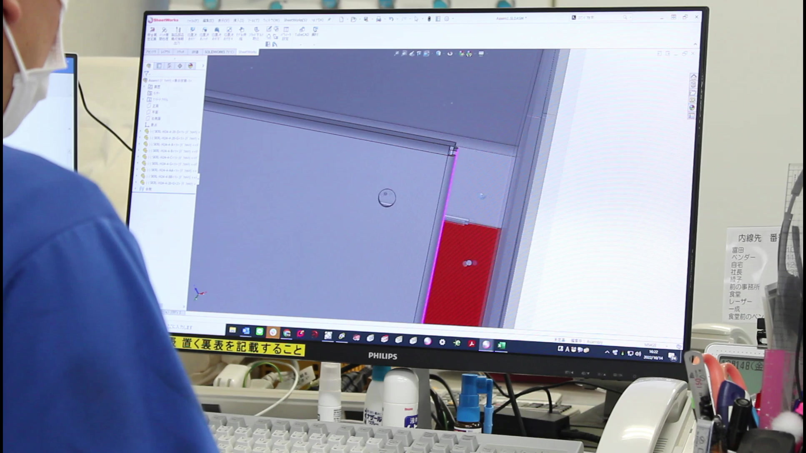
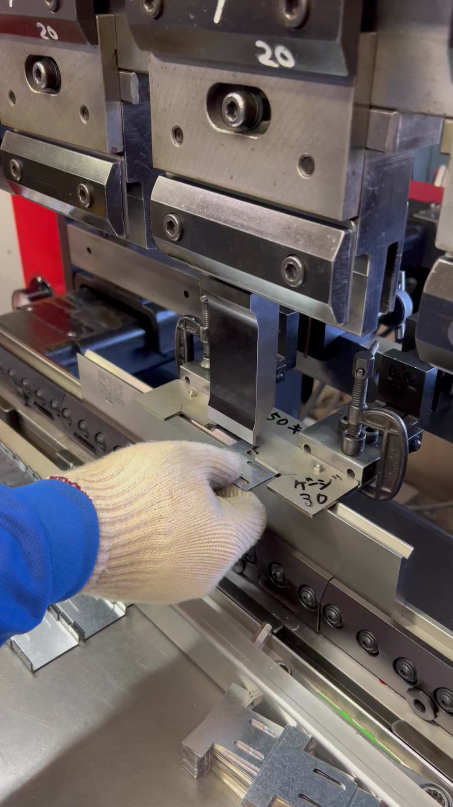

0476-93-3730平日 8:00 - 17:00
お問い合わせ
柿沼製作所の一番の武器は「提案力」です。お客様から図面をいただいたその場で3Dを検討し、「この工法なら、もっとキレイに・確実に・短い納期でできます」という代替案を提示します。図面が固まる前のこの一手間こそが、最終的な品質と納期を大きく左右します。
製造性を考慮した設計（DFM：Design For Manufacture）は、ただ図面通りに作る下請けとは一線を画す、私たちのものづくりの哲学です。

自動化が進む時代でも、最終品質を決めるのは人の手です。溶接の一本、仕上げのひと撫で——熟練職人の感覚が、製品の良し悪しを分けます。柿沼製作所では、この手仕事の品質を何より大切にしています。
2mm丸棒に1mmワイヤーを溶接するような「他社が敬遠する難加工」にも、工法を検討しながら挑戦する。それができるのは、現場に確かな技術があるからです。

3D設計 → レーザー切断 → タレットパンチ → ベンディング → 溶接 → 研磨・仕上げ。板金加工の主要工程をすべて自社内で行います。工程が社外をまたがないから、品質の一貫性が保たれ、トラブル時の対応も早い。
設備はアマダ製で統一。機械同士の連携と職人の習熟が、安定した加工品質と短納期を支えています。

30代・50代・70代——幅広い世代の職人が同じ現場で働いています。ベテランの経験と若手の柔軟さが交わることで、技術が自然に受け継がれていきます。20代で2代目を継いだ代表が掲げるのは「やってみせる」経営。背中で示すリーダーシップが、チームを動かします。
